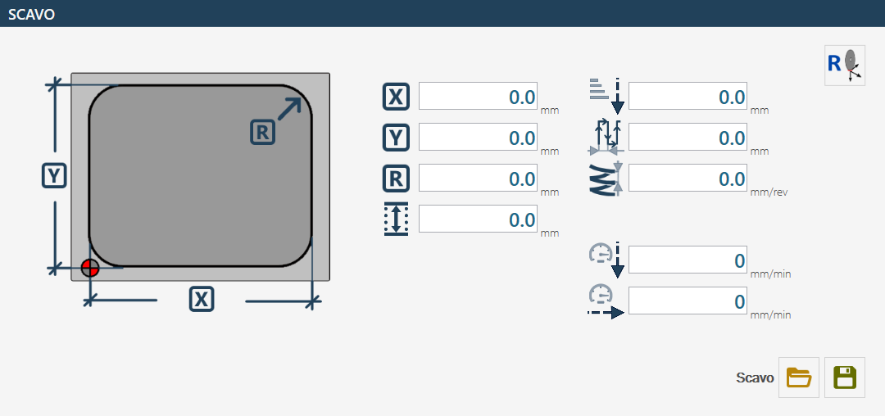
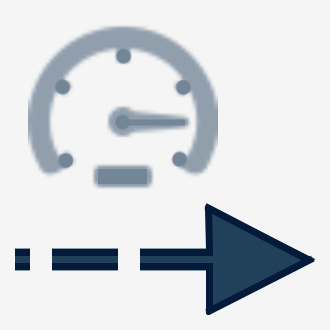

The pocketing page is used to machine a rectangular pocket with filleted corners and a flat bottom.
A suitable milling cutter mounted on the main spindle is required for this operation.
The “worktable level” is used as the bottom level.
The cycle uses multiple passes, with a helical entry at the centre and a pass spacing that can be set in the parameters.

Parameters
 | X |
Y | |
 | Fillet R |
 | Pocket depth |
 | Z step |
 | Pass spacing |
 | Entry depth increment  |
 | Machining speed |
 | Downward speed |
 | Reset X and Y axes  The position is acquired by placing the centre of the milling cutter at the indicated point. |
Executing the machining operation
Enter the X, Y and R dimensions that define the shape of the required rectangular pocket.
Check that the tool data, particularly the diameter, are correct.
The following two execution modes are available
Mode for reaching the pocket down to the worktable position
To machine a pocket correctly, position the machine centre at the pocket origin as shown in the figure in the previous chapter. This ensures that the entire operation is performed correctly relative to the designated area.
Then set the dimensions that define the shape of the pocket to be machined.
Before starting machining, verify the accuracy of the selected tool data, paying particular attention to the diameter, as this directly affects the accuracy and quality of the pocket.
The “worktable position” must be acquired with reference to the bottom level of the pocket. To determine it correctly, position the tool on the top edge of the material and reset the Z position. Then move downwards by the required pocket depth. The worktable position can now be acquired using the dedicated button. When using milling cutters, it is advisable to perform this operation with the A axis at 90_ to avoid inaccuracies caused by the actual tool length.
After defining the worktable position, reset the X and Y axes. Press the relevant reset button and position the centre of the milling cutter exactly at the point indicated in the figure by the reference symbol. On machines equipped with a pointing laser, the X and Y zero point can be acquired directly using the laser reference.
The pocket depth depends directly on the level set as the worktable position and on the Z-axis position when the cycle is started using the “Cycle Start” button. Machining begins with a helical entry at the centre, down to the depth specified by the “Z Step” parameter. The area is then cleared using a concentric movement according to the spacing set in the machining parameters.
The machine movements required to reach the initial position are performed at the “clearance position”, which can be defined in the tool parameters. This ensures that the tool does not interfere with any obstacles during positioning movements.
Mode for positioning above the piece and resetting the origin value
This mode requires the ”Pocket depth” parameter to be set and then used.